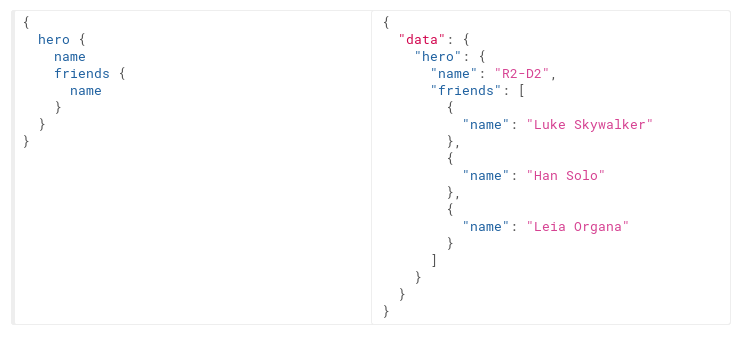
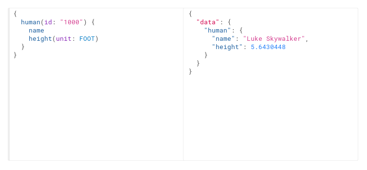
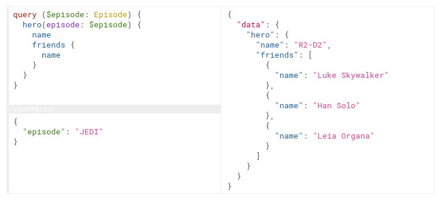
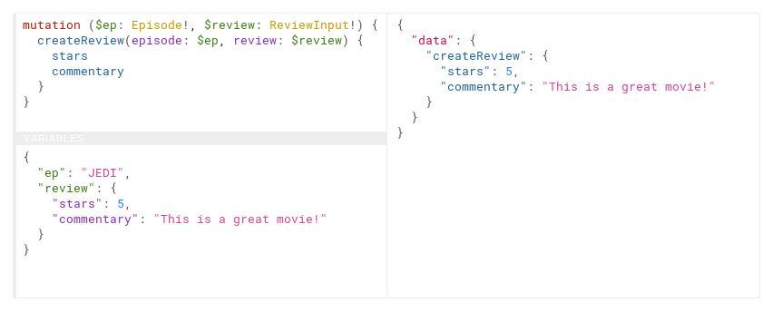

О себе
- PHP Developer
- Стартапер


Мультиканальный, комплексный сервис в индустрии путешествий, который работает с такими сегментами рынка как: отели, авиа и жд билеты, круизы, трансферы, а также рестораны, концерты и другие виды досуга.
- Стартап
- PHP 7.1
- Не в продакшене
API
(Application Programming Interface)
Говорим о API подразумеваем REST!?
Минусы REST API
- Не существует какого-то единого стандарта, который бы полностью описывал REST.
- Словарь REST поддерживается не полностью (в основном браузеры поддерживают GET и POST).
- Множество запросов для получения необходимых данных:
- GET /books/:id
- GET /books/:id/comments
- GET /books/:id/author
- Почти RESTful
- ...
Что делать?
Еще некоторые виды API
- SOAP
- JSON API
- OData
- GData
- MQL
- SparQL
- ???
- ...
Популярные API
- Почти RESTful
- SOAP
- JSON API
- ???
Что выбрать для разработки API?
GraphQL
(A query language for your API)Что такое GraphQL?
В двух словах, GraphQL это синтаксис, который описывает как запрашивать данные, и, в основном, используется клиентом для загрузки данных с сервера.
Facebook используют GraphQL с 2012 года. А в 2015 году GraphQL стал доступен всем.
Плюсы GraphQL
- Facebook используют GraphQL с 2012 года.
- GraphQL решает реальные задачи.
- Просто и очевидно.
- Четкий и ясный API между backend и frontend.
- Уменьшает затраты на коммуникации.
- Все больше компаний переходит на GraphQL.
Языковая поддержка GraphQL
- PHP
- Go
- Java
- JavaScript
- C# / .NET
- Scala
- Python
- Ruby
- ...
Who’s using GraphQL?
https://github.com/APIs-guru/graphql-apis

GitHub GraphQL API
GraphQL в действии:
Пример запроса
Запрос с аргументами
Параметры отдельно
Пример мутации
GraphQL в PHP
https://github.com/webonyx/graphql-phpFrameworks
Getting Started
http://webonyx.github.io/graphql-php/getting-started/Первый запрос
query {
echo(message: "Hello World")
}
Object Type
use GraphQL\Type\Definition\ObjectType;
use GraphQL\Type\Definition\Type;
$queryType = new ObjectType([
'name' => 'Query',
'fields' => [
'echo' => [
'type' => Type::string(),
'args' => [
'message' => Type::nonNull(Type::string()),
],
'resolve' => function ($root, $args) {
return $root['prefix'] . $args['message'];
}
],
],
]);
Endpoint
graphql.php
use GraphQL\GraphQL;
use GraphQL\Type\Schema;
$schema = new Schema([
'query' => $queryType
]);
$rawInput = file_get_contents('php://input');
$input = json_decode($rawInput, true);
$query = $input['query'];
$variableValues = isset($input['variables']) ? $input['variables'] : null;
try {
$rootValue = ['prefix' => 'You said: '];
$result = GraphQL::executeQuery($schema, $query, $rootValue, null, $variableValues);
$output = $result->toArray();
} catch (\Exception $e) {
$output = [
'errors' => [
[
'message' => $e->getMessage()
]
]
];
}
header('Content-Type: application/json');
echo json_encode($output);
Просмотр
php -S localhost:8000 graphql.php
curl http://localhost:8080 -d '{"query": "query { echo(message: \"Hello World\") }" }'
Результат
---Подробная документация
http://webonyx.github.io/graphql-php/Перевод на русский
Почитать:
- GraphQL specification.
- Learn GraphQL.
- Что же такое этот GraphQL?
- Почему за GraphQL будущее.
- Анатомия запросов GraphQL.
- Сравнение REST и GraphQL.
- Покойся с миром, REST. Долгих лет жизни GraphQL.
Делаем GraphQL API на PHP и MySQL.
Вопросы
https://github.com/nepster-web/conf-info/2017/CodeID-GraphQL